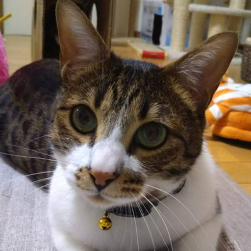

VS Code Conference Japan 2021
About
Timetable
Staffs
Supporters
Tweet #vscodejp_A
Ask the Speaker at A
Tweet #vscodejp_B
Ask the Speaker at B
Feel free to join the question and answer session!
If you don't have a twitter account, you can join Ask the Speaker.
AboutSection
Date, time
November 20, 2021
Held Venue
Online
Entry fee
Free
Howto Get
Apply for participation
Thank you for subscribing to the YouTube channel!
Handson
Track A
Track B
Timetable
Track A
Track B
Staffs
Atsushi Morimoto
Aya Tokura

Keisuke Sawa
Masato Nabeshima
Nori Suzuki
Yuki Ueda
jiyuujin
setoazu
yamachu
ふじい
まっぴぃ／Yuji Masaoka
もっちゃん／Takashi Kawamoto
ロフトくん
Supporters
Aya Tokura
Nori Suzuki
aetos
iginari